Die Terminarten "FIBU-Autobuchen" und "FAKT-Autobeleg" werden in der jeweiligen Applikation im Aktionsplan hinterlegt. Alle weiteren Terminarten können im Fenster "Termin bearbeiten" erzeugt und / oder editiert werden.
Hinweis
Das Fenster wird automatisch geöffnet, wenn im Kalender der Button "neuer Termin" oder ein bestehender Termin ausgewählt wird.
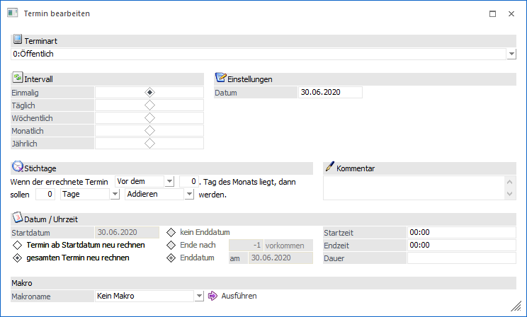
Terminart
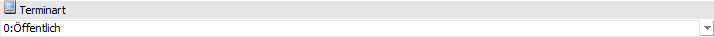
Ø Terminart
An dieser Stelle kann die Art des Termins hinterlegt werden.
Termin
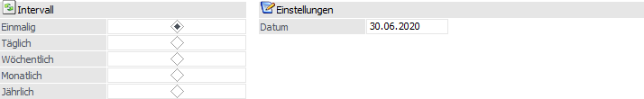
Ø Intervall
An dieser Stelle kann der Rhythmus des Termins eingestellt werden. Abhängig von der Eingabe ändern sich die Eingabefelder im Bereich "Einstellungen".
Ø Einstellungen
An dieser Stelle können, abhängig vom Intervall, die Intervall-Einstellungen des Termins definiert werden.
ü Einmalig
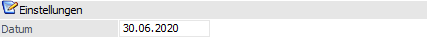
ü Täglich
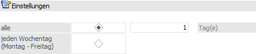
ü Wöchentlich
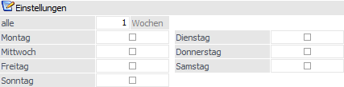
ü Monatlich
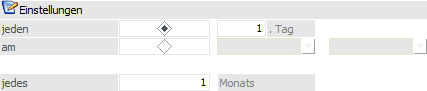
ü Jährlich
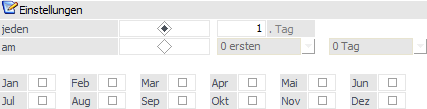
Stichtage
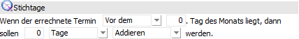
Ø Stichtage
Mit der Option "Stichtage" kann das Datum des Termins noch verschoben werden. Es kann definiert werden ob zu, nach oder vor einem bestimmten Tag des Monats ein definierter Zeitraum addiert oder subtrahiert werden soll.
Kommentar
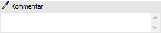
Ø Kommentar
Es kann ein Kommentar zu dem Termineintrag erfasst werden, unter dem der Termin später gefunden werden kann.
Datum / Uhrzeit
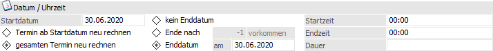
Ø Startdatum
Eingabe des Datums, ab dem der Termin festgelegt wird.
Ø Termin ab Startdatum neu rechnen
Diese Option bewirkt bei Änderungen der Termindefinition, dass ab dem eventuellen neuen Startdatum der Termin neu gerechnet wird.
Ø gesamten Termin neu rechnen
Diese Option bewirkt bei Änderungen der Termindefinition, dass alle Termine dieser Serie ab dem Startdatum neu gerechnet werden.
Ø kein Enddatum
Diese Option bewirkt, dass der Rhythmus des Termins nicht beendet wird.
Ø Ende nach … Vorkommen
Eingabe der Anzahl von Terminen nach denen diese Terminserie beendet ist.
Ø Enddatum
Eingabe des Datums, nach dem kein weiterer Termin dieser Terminserie erstellt werden soll.
Ø Startzeit / Endzeit / Dauer
Eingabe der Start- und Endzeit des Termins bzw. die Dauer
Makro
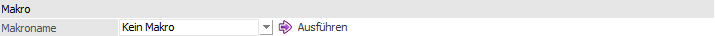
Ø Makroname
An dieser Stelle kann ein Makro hinterlegt werden, welche bei Anwahl des Buttons "Ausführen" ausgeführt wird.
Buttons
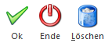
Ø Ok
Durch Anklicken des OK-Buttons wird der Termin gespeichert und auch in der Übersicht angezeigt (sofern er in den ausgewählten Bereich fällt).
Ø Ende
Durch Drücken der ESC-Taste wird das Fenster geschlossen, der Termin wird nicht gespeichert.
Ø Löschen
Durch Anklicken des Löschen Buttons wird der Termin gelöscht.